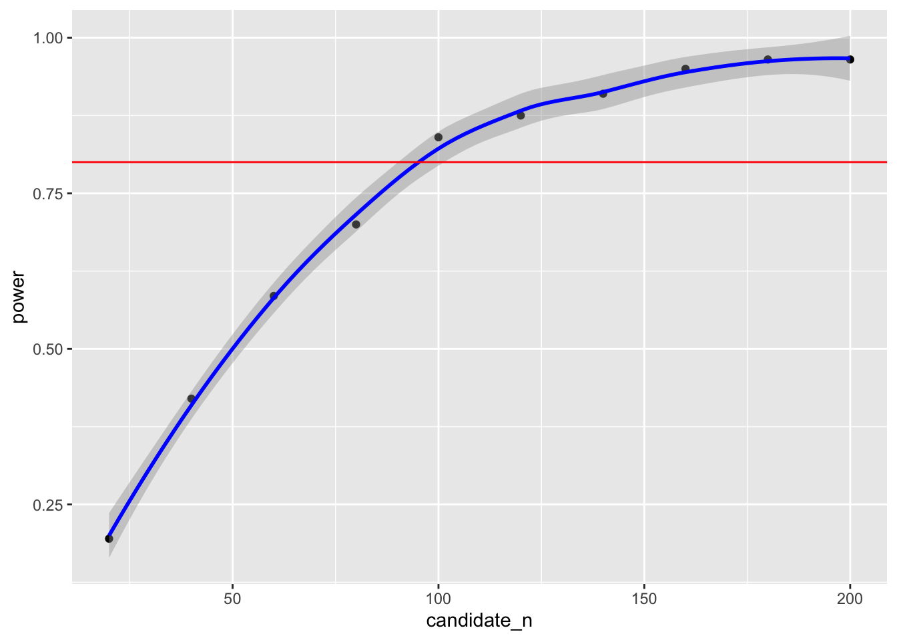

This page contains extra R content not covered in the demonstrations and could be considered supplementary to the module. This content is useful for completing the advanced exercises from Week 8 and covers simulating data in R. In particular, we will conduct a power analysis via simulation.
If you’re not familiar with creating custom functions in R, see the extra content page on custom functions. In order to simulate data, we will be creating a custom function that creates a data.frame based on parameters we can set in the function. We are going to recreate the data.frame from Workbook 5 where we tested the hypothesis that cat-people are more introverted than dog-people. Before we can do that though, we must introduce some new functions:
sample()
This function randomly samples options from a vector. This function
is ideal for randomly sampling a categorical variable. For instance,
below we randomly sample 40 objects who are either in the ‘cat’ group or
the ‘dog’ group. To see more about how this function works, read
help(sample).
sample(c("cat","dog"),40,replace = TRUE)## [1] "dog" "cat" "dog" "dog" "cat" "dog" "cat" "cat" "cat" "dog" "cat" "dog" "cat" "cat" "dog" "dog" "dog" "cat" "cat" "cat" "cat" "dog" "cat"
## [24] "dog" "dog" "dog" "dog" "dog" "dog" "dog" "cat" "cat" "dog" "cat" "cat" "cat" "dog" "dog" "cat" "dog"rnorm()
This function creates a random continuous variable that is normally
distributed. This function is ideal for sampling a continuous variable
with a normal distribution. In the example below, we create a random
normal distribution with a mean of 0 and a standard deviation of 1. To
see more about how this function works, read
help(rnorm).
rnorm(40,mean = 0,sd = 1)## [1] -1.058298098 -0.494887067 -0.276336044 1.677214414 0.585625134 1.221793319 -0.160484191 0.698292335 -0.987040585 -0.721883659
## [11] 0.057155599 -0.357526893 0.354181049 1.395777044 0.302637953 -2.726593841 -1.972823883 1.378324376 -1.075325152 -1.094090821
## [21] 0.003252058 0.619209949 1.643594328 1.813349384 0.881773676 0.168823551 -2.712205739 0.367844676 0.570647150 1.281949238
## [31] 1.936440815 -2.111134522 0.346520776 -0.886600534 0.214327970 -1.132149603 -0.479460938 -0.074471539 -0.559115178 -0.179451092We now have the tools to create our simulate data function, which we
will save as create_dataset. For now, it will take one
argument, n, which specifies the number of participants in the
data.frame.
We will set the mean and sd of the variable ‘introvert’ to 21.00 and 3.00 respectively, which is close enough to what we found in the class dataset.
create_dataset <- function(n){
result <- data.frame(group = sample(c("cat","dog"),n,replace = TRUE),
introvert = rnorm(n,mean = 21,sd = 3))
return(result)
}Let’s test it out:
create_dataset(20)## group introvert
## 1 dog 24.92359
## 2 cat 18.00746
## 3 cat 21.39746
## 4 dog 22.76915
## 5 dog 27.03287
## 6 cat 24.21762
## 7 dog 16.91917
## 8 dog 22.22121
## 9 cat 23.73621
## 10 cat 17.27384
## 11 cat 18.73790
## 12 dog 19.50788
## 13 cat 18.05140
## 14 cat 19.04437
## 15 cat 24.56951
## 16 cat 16.70803
## 17 cat 17.39383
## 18 dog 25.82244
## 19 dog 25.06846
## 20 dog 15.91700As you can see above, our function is creating a data.frame with 20
participants, and their scores on the group and
introvert variables are randomly determined from the
sample() and rnorm() functions
respectively.
We can do anything with this new simulated data.frame as if it were a data based on real observations. For instance, we could conduct an independent-samples t-test. Remember, the variables we created are completely random, so we would expect a non-significant result here.
t.test(introvert ~ group,create_dataset(20))##
## Welch Two Sample t-test
##
## data: introvert by group
## t = -2.1677, df = 17.951, p-value = 0.04387
## alternative hypothesis: true difference in means between group cat and group dog is not equal to 0
## 95 percent confidence interval:
## -3.44722129 -0.05357039
## sample estimates:
## mean in group cat mean in group dog
## 20.86786 22.61825Let’s expand the function above. How about creating a function that
simulates a dataset, then runs a t-test, and then returns the results of
that test? We can do this by including the function that runs a t.test
within the function we wrote above. Note that we use the
tidy() function from the broom package to
easily access the results from the t-test.
simulate_test <- function(n){
result <- data.frame(group = sample(c("cat","dog"),n,replace = TRUE),
introvert = rnorm(n,mean = m.introvert,sd = sd.introvert))
test <- t.test(introvert ~ group, data = result) %>%
tidy()
return(test$estimate)
}simulate_test(20)## [1] 0.6360037Let’s go another step further and say we want to run a t-tests on
simulated data 1000 times. Doing so will give us a distribution of
estimates given a certain statistical test and sample size. We can do
this by using the replicate() function. This function
expects two arguments, the first is the number of times we want to
conduct a function, the second is the function itself. In the case
below, the output is saved as a vector.
output_20 <- replicate(1000,simulate_test(20))To see the distribution of estimates, we can plot these values:
ggplot() +
geom_density(aes(output_20))But hang on! We know there is no effect as the two variables in the t-test are completely random. So how come we are getting such a wide-range of t-statistics? This demonstrates one of the core issues with statistical tests. A sample is only a portion of the entire population, and your estimate can vary greatly depending on the slice of the population that happens to make it into your sample.
What if we increase the number of participants in our simulated dataset to 200 participants?
output_200 <- replicate(1000,simulate_test(200))ggplot() +
geom_density(aes(output_200))We see that, while we still get a range of estimates, they are much less extreme. This is because with a larger sample size, the ‘slice’ that is our sample is more likely to be representative of our population, and therefore the t-statistic is more likely to be around the correct value. Using this knowledge, we can construct a power analysis to determine the minimum number of participants needed to accurately detect an effect.
Above, we replicated a data.frame where we do not expect to find a significant effect (because the variables are completely random and unrelated from each other). However, what if we expect an association? Using the same technique, we can run a power analysis to determine whether a certain research design and analysis plan has the ability to detect an effect given different sample sizes.
As covered in the lectures, power is the ability to detect an effect if it is there. Generally, things that influence power are effect size, alpha level (significance level), and number of observations.
In the code below, we again create a function, but include an additional argument for effect size (in the form of a mean difference between the ‘cat’ and ‘dog’ groups). Also, instead of returning the estimate, we will return the p-value.
simulate_test2 <- function(n,mean.diff){
result <- data.frame(group = sample(c("cat","dog"),n,replace = TRUE),
introvert = rnorm(n,mean = m.introvert,sd = sd.introvert)) %>%
mutate(mean.diff = mean.diff) %>%
mutate(introvert = ifelse(group == "cat",introvert - mean.diff/2,introvert + mean.diff/2))
test <- t.test(introvert ~ group, data = result) %>%
tidy()
return(test$p.value)
}Then, we can calculate the proportion of times we find a significant effect when alpha = .05. Let’s say that we expect a mean difference on of 2 on introversion between cat-people and dog-people.
cat.dog_difference <- 2Remember, using logical operators results in a logical variable,
which is coded as TRUE = 1 and FALSE = 0. Therefore, we can use the
mean() function to get the proportion of times out of the
200 simulations we correctly found a significant effect.
sim.results <- replicate(200,simulate_test2(20,cat.dog_difference))
power <- mean(sim.results < .05)
power## [1] 0.23The convention is that the analysis is sufficiently powered if it can detect an effect that is present 80% of the time. The power calculated for a sample size of 20 was 23%, which falls quite short of this threshold. What if we increased our sample size?
sim.results <- replicate(200,simulate_test2(240,cat.dog_difference))
power <- mean(sim.results < .05)
power## [1] 0.985By running the above simulations at different sample sizes, we will
be able to determine the sample sizes needed to detect this effect at
80% power. Below is code to automatically run the
simulate_test2() function at different sample sizes and
save the results in a data.frame. There are some complicated things
going on here, but see if you can make sense of it. You may need to look
up what certain functions do.
power.grid <- data.frame(candidate_n = rep(seq(20,200,by = 20),each = 200)) %>%
mutate(power = vapply(candidate_n,simulate_test2,FUN.VALUE = 1,mean.diff = cat.dog_difference)) %>%
group_by(candidate_n) %>%
summarise(power = mean(power < .05))power.grid## # A tibble: 10 × 2
## candidate_n power
## <dbl> <dbl>
## 1 20 0.285
## 2 40 0.5
## 3 60 0.7
## 4 80 0.84
## 5 100 0.89
## 6 120 0.945
## 7 140 0.975
## 8 160 0.98
## 9 180 1
## 10 200 0.99This suggests that to detect a mean difference of 2 on introversion between cat-people and dog-people with our data 80% of the time, we would require a sample size between 60 and 80 to be confident in our result. We can also plot the simulated power analyses to help determine the sample size required.
ggplot(data = power.grid,aes(x = candidate_n,y = power)) +
geom_point() +
geom_smooth(colour = "blue") +
geom_hline(yintercept = .80,colour = "red")
Compare the power estimate above with the one using the
pwr.t.test() function below. Note: the simulation above
calculates total N, so you will need to divide it by two to get the
sample size for each group.
library(pwr)
#First we must calculate effect size (Cohen's D)
D <- cat.dog_difference/sqrt((sd.introvert^2 + sd.introvert^2)/2)
D## [1] 0.5880646#We then put this effect size into the pwr.t.test() function.
pwr.t.test(d = D,power = .8,sig.level = .05,type = "two.sample")##
## Two-sample t test power calculation
##
## n = 46.37296
## d = 0.5880646
## sig.level = 0.05
## power = 0.8
## alternative = two.sided
##
## NOTE: n is number in *each* groupIf you would like to practice the skills on this page, weekly exercise questions on this content are available in the advanced exercises for Week 8. You can download the interactive exercises by clicking the link below.